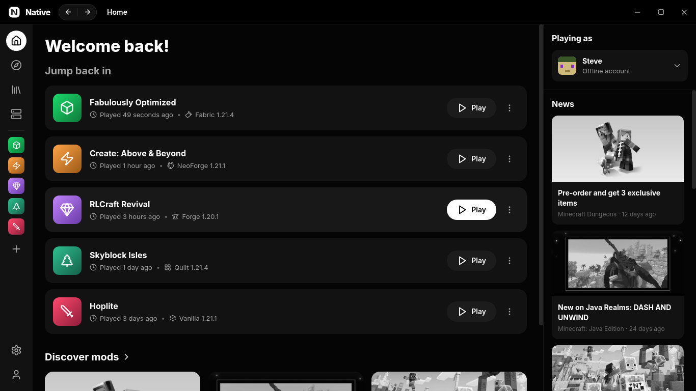
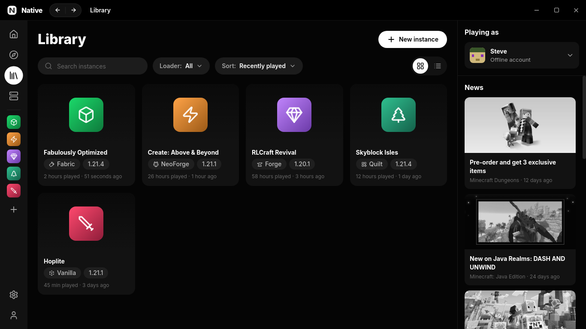
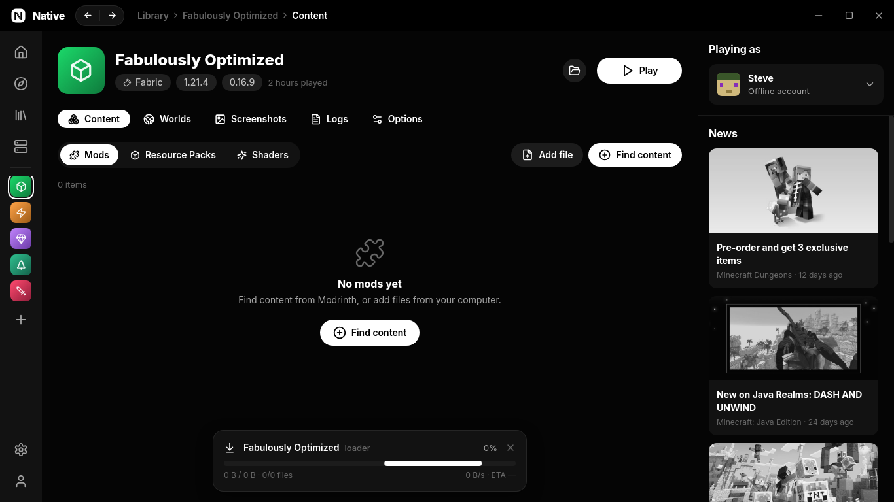
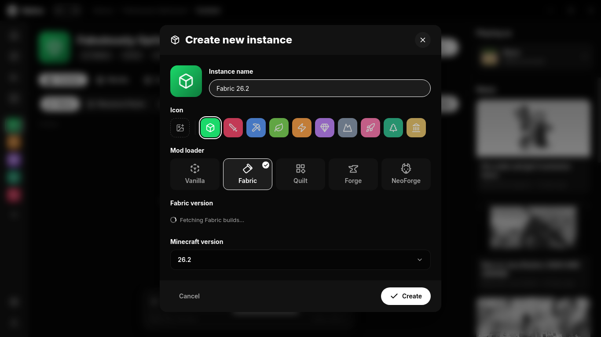

The Minecraft launcher,
in black & white.
Native is a fast, focused launcher for Windows and Linux. Instances, one-click mod loaders, Modrinth search, servers, worlds — with sign-in that just works.

Nine features. Zero clutter.
Every capability of a heavyweight launcher, wrapped in an interface that stays out of your way.
Instances
Isolated setups per pack or version. Create, duplicate, custom images, per-instance RAM and JVM flags, playtime tracking.
One-click mod loaders
Fabric, Quilt, Forge, and NeoForge install themselves — with the right Java (8/17/21) fetched automatically.
Modrinth built in
Search mods, resource packs, and shaders in-app. One-click installs resolve required dependencies for you.
Bulletproof downloads
Parallel, resumable, checksum-verified. Real speed and ETA. Corrupt files self-heal on the next launch.
Servers
Live status, MOTD, player counts and ping for your server list — then quick-join straight into the game.
Worlds & screenshots
Browse singleplayer worlds, back them up to zip, and flip through your in-game screenshots without leaving the launcher.
Sign-in that just works
Microsoft login in a popup window — no setup, no codes to copy. Tokens live encrypted in your OS keychain. Offline profiles included.
Fast & smooth
Under a second to launch. 60 fps everywhere. Downloads never block the interface — heavy work runs off-thread.
Auto-updates
Checks quietly, downloads in the background, applies on restart. Delta updates on Windows keep them small.
Designed in monochrome.
Pure black surfaces, white accents, and color only where it means something. Prefer the classic green? It's one toggle away in Settings.



Download v0.1.0
Free and open source. Auto-updates keep you current after the first install.